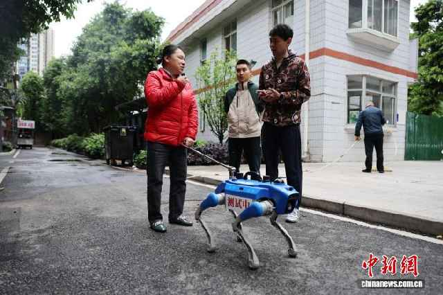
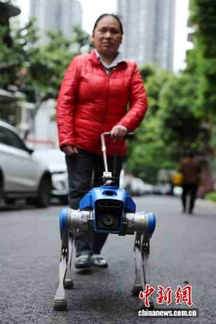
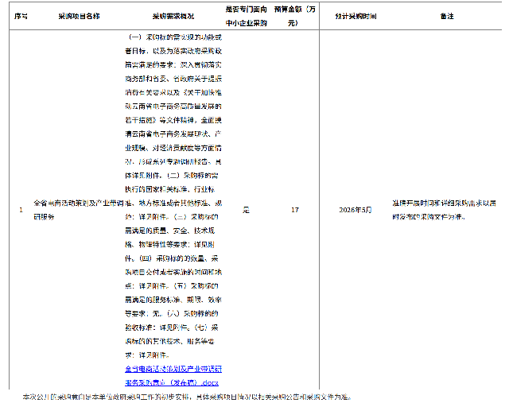
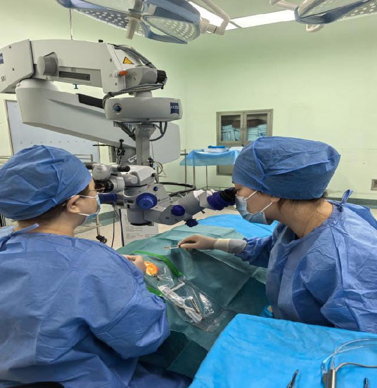
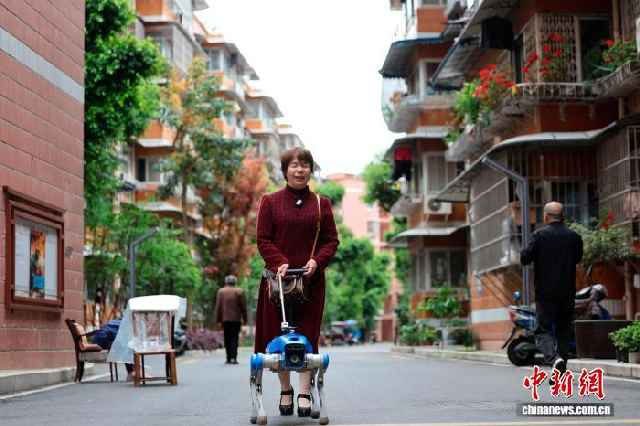

东钱湖环湖绿道春季纪实
灵感无界，触手可及
海量多模态媒资，AI赋能创意检索
最新图片资源

宁波舟山港集装箱码头作业

南宋文化节开幕现场图集
城市更新重点项目航拍
全省资源库推荐素材

视频09:00越剧120周年：历久弥新的越剧百花园
图片6图
黄河入画 滨州出彩全国主流媒体行

图片高清“营造江南”宋代建筑美学展素材

视频03:28浙江高质量发展一线观察素材包
资源聚合
汇总当前媒资素材库的图片、视频、音频规模。
图片资源总量
1,942张
视频资源总量
6.47小时
音频资源总量
17条
资源入库趋势
图片
视频
音频
总量趋势
全省资源库数据统计
按入库时间统计稿件、图片、视频、音频的新增规模和结构变化。
稿件入库总量
38,426篇
近两周 +1,284
图片入库总量
126,914张
近两周 +6,812
视频入库总量
9,376条
近两周 +463
音频入库总量
2,148条
近两周 +92
入库统计趋势
稿件
图片
视频
音频
总量趋势
多组检索条件之间按“或”运算；每组内部按匹配方式计算。
发布时间
稿件类型
检索设置
共 2,486 条 · 20 条/页